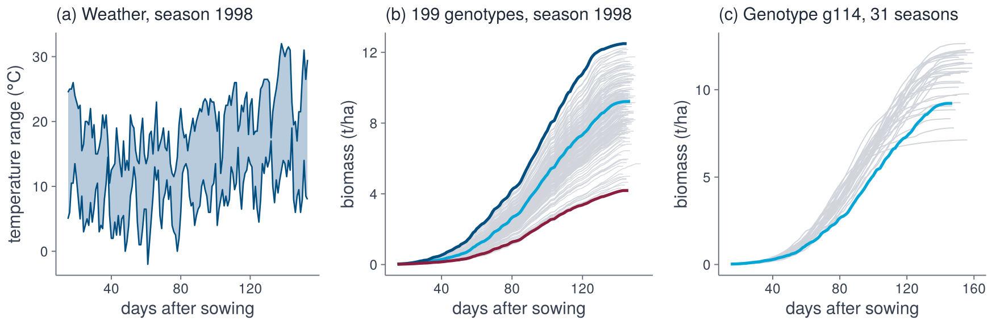
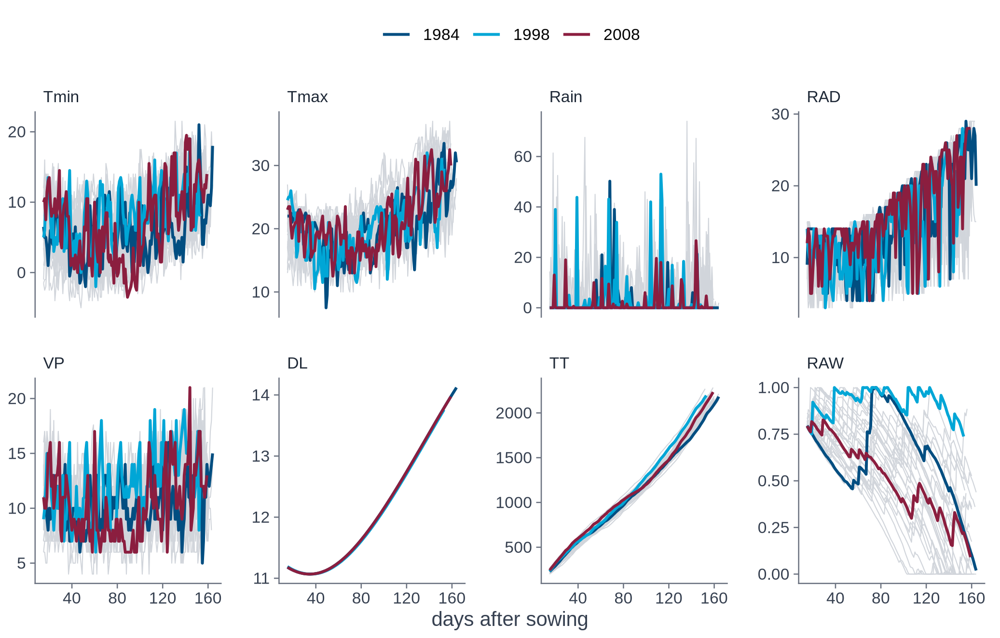
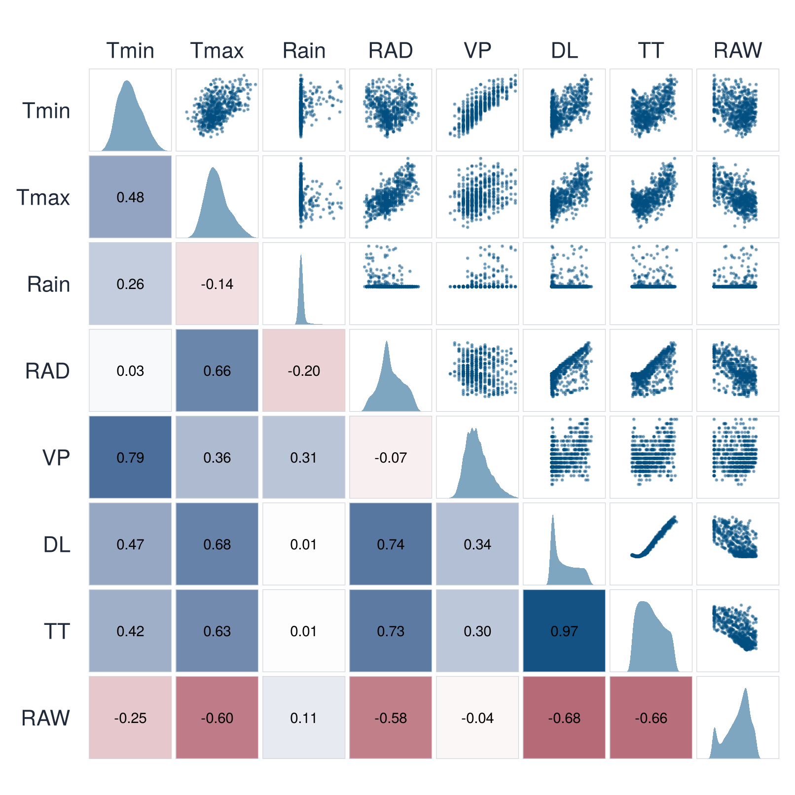
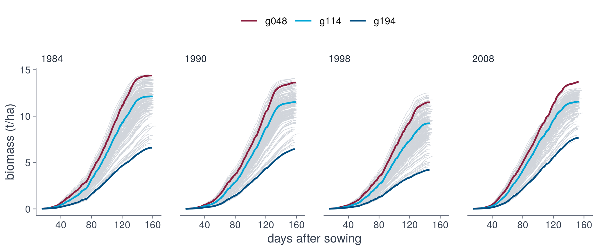

wx <- read.csv("data/narrabri_weather.csv")
traj <- read.csv("data/narrabri_biomass.csv.gz")
head(wx, 3)
head(traj, 3)2 · Data
We demonstrate SINDy using an APSIM simulation dataset of wheat (Bustos-Korts et al., 2019). The dataset contains daily biomass trajectories of 199 genotypes in 31 years (1983 to 2013) at Narrabri (New South Wales). The trajectories are generated by APSIM, a crop growth model, and are influenced by weather conditions, which are the same for all genotypes within a year.

import matplotlib.pyplot as plt
import numpy as np
import pandas as pd
from dgxe import *
wx = pd.read_csv("data/narrabri_weather.csv")
traj = pd.read_csv("data/narrabri_biomass.csv.gz")
print(wx.head(3))
print(traj.head(3)) year das Tmin Tmax Rain RAD VP DL TT RAW
1 1983 15 10.0 17.0 0 12 11 11.191 247.50 0.7966
2 1983 16 3.5 15.0 0 11 10 11.180 256.75 0.7909
3 1983 17 6.0 15.5 0 13 10 11.169 267.50 0.7838 genotype year das biomass lai
1 g001 1983 15 0.0164 0.039
2 g001 1983 16 0.0190 0.043
3 g001 1983 17 0.0228 0.049Weather variables
The weather table has one row per day and year, with the year (year), the days after sowing (das) and the following given variables.
| Variable | Description |
|---|---|
Tmin, Tmax |
daily minimum and maximum temperature (°C) |
Rain |
rainfall (mm) |
RAD |
solar radiation (MJ m⁻² d⁻¹) |
VP |
vapour pressure (hPa) |
DL |
day length (h) |
The table also contains two covariates that were constructed from these variables: TT and RAW.
Constructed variables
Two further variables in the table are constructed from the weather variables: thermal time (TT) and relative available water (RAW).
weather variables (given)
constructed variables
Tmin
Tmax
Rain
RAD
VP
DL
TT thermal time
\(\sum_{s \le t} \max\left(\tfrac{T_{\min,s} + T_{\max,s}}{2}, 0\right)\)
\(\sum_{s \le t} \max\left(\tfrac{T_{\min,s} + T_{\max,s}}{2}, 0\right)\)
RAW relative available water
\(W_t / W_{\max}\), bucket of rain and \(\mathrm{ET}_0\)
\(W_t / W_{\max}\), bucket of rain and \(\mathrm{ET}_0\)
Thermal time measures the development of the crop. It is the cumulative sum of the thermal time of each day, the mean temperature truncated at zero:
\[ \mathrm{TT}_t = \sum_{s \le t} \max\left(\frac{T_{\min,s} + T_{\max,s}}{2},\, 0\right). \]
The sum starts at sowing, so TT on the first day in the table (day 15) already contains the first 14 days.
Relative available water is the filling of a soil-water bucket: rain adds water and a fraction \(k\) of the reference evapotranspiration \(\mathrm{ET}_0\) removes it, up to the capacity \(W_{\max}\) of the soil,
\[ W_t = \min\bigl(\max(W_{t-1} + P_t - k\,\mathrm{ET}_{0,t},\, 0),\, W_{\max}\bigr), \qquad \mathrm{RAW}_t = \frac{W_t}{W_{\max}}. \]
The capacity is the plant-available water capacity of the soil at Narrabri, \(W_{\max} = 217.5\) mm (a grey vertosol), and the bucket starts each season with the plant-available water at sowing, \(W_0 = 175\) mm, so that \(\mathrm{RAW}_0 = 0.80\) (Bustos-Korts et al., 2019, Table 1). \(\mathrm{ET}_0\) is the FAO-56 Penman–Monteith reference evapotranspiration, computed from the weather variables of the table, and \(k = 0.8\). With these values the bucket reproduces RAW over the whole season with an RMSE of 0.004.
In total there are eight variables: the six weather variables and the two constructed ones. All of them are candidates for the library.
Variables over the years
All eight variables, for all years (grey) and three selected years:
vars <- c("Tmin", "Tmax", "Rain", "RAD", "VP", "DL", "TT", "RAW")
w <- data.frame(
year = wx$year, das = wx$das,
variable = factor(rep(vars, each = nrow(wx)), vars),
value = unlist(wx[vars])
)
shown <- w[w$year %in% c(1984, 1998, 2008), ]
ggplot(w, aes(das, value, group = year)) +
geom_line(colour = "#D1D5DB", linewidth = 0.25) +
geom_line(data = shown, aes(colour = factor(year)), linewidth = 0.7) +
facet_wrap(~variable, scales = "free_y", nrow = 2) +
scale_colour_dgxe("blue", "cyan", "burgundy") +
labs(x = "days after sowing", y = NULL) +
theme_dgxe() +
legend_top()VARS = ["Tmin", "Tmax", "Rain", "RAD", "VP", "DL", "TT", "RAW"]
years = [1984, 1998, 2008]
fig, axes = plt.subplots(2, 4, figsize=(10, 4.5), sharex=True)
for ax, name in zip(axes.flat, VARS):
for year, g in wx.groupby("year"):
ax.plot(g["das"], g[name], color=GREY, lw=0.25)
for year, colour in zip(years, [BLUE, CYAN, BURGUNDY]):
g = wx[wx["year"] == year]
ax.plot(g["das"], g[name], color=colour, lw=0.9, label=year)
ax.set_title(name, loc="left")
axes[0, 0].legend(frameon=False)
fig.supxlabel("days after sowing")
fig.tight_layout()
Correlation
Correlation of the eight variables over all days and years:
r <- cor(wx[vars])
long <- data.frame(a = factor(rep(vars, each = 8), vars),
b = factor(rep(vars, 8), rev(vars)), r = as.vector(r))
ggplot(long, aes(a, b, fill = r)) +
geom_tile(colour = "white") +
geom_text(aes(label = sprintf("%.2f", r)), size = 3) +
scale_fill_gradient2(low = dgxe[["burgundy"]], mid = "white",
high = dgxe[["blue"]], limits = c(-1, 1)) +
labs(x = NULL, y = NULL, fill = "correlation") +
theme_dgxe() +
theme(axis.line = element_blank(), axis.ticks = element_blank(),
legend.position = "right")from matplotlib.colors import LinearSegmentedColormap
colours = LinearSegmentedColormap.from_list("dgxe", [BURGUNDY, "white", BLUE])
corr = wx[VARS].corr()
fig, ax = plt.subplots(figsize=(5, 4.2))
image = ax.imshow(corr, cmap=colours, vmin=-1, vmax=1)
ax.set_xticks(range(8), VARS, rotation=45, ha="right")
ax.set_yticks(range(8), VARS)
for i in range(8):
for j in range(8):
ax.text(j, i, f"{corr.iloc[i, j]:.2f}", ha="center", va="center",
fontsize=7)
fig.colorbar(image, label="correlation")
fig.tight_layout()
Thermal time and day length are almost collinear (0.97), since both increase through the year. Radiation and the maximum temperature follow the same yearly pattern (0.74 with day length, 0.66 between each other), RAW falls as the year progresses (−0.68 with day length), and Tmin and VP are strongly correlated (0.79). Rain is nearly uncorrelated with the other variables. Strongly correlated variables carry overlapping information, which is a first indication that a library does not need all eight.
Response
The response is the biomass (t/ha) of each genotype. Each panel is one year: all 199 genotypes in grey and three genotypes with the lowest, median and highest final biomass in colour.
drv <- make_drivers(wx)
tr <- make_trajectories(traj, drv)
three <- spread_genotypes(tr)
years <- traj[traj$year %in% c(1984, 1990, 1998, 2008), ]
ggplot(years, aes(das, biomass, group = genotype)) +
geom_line(colour = "#D1D5DB", linewidth = 0.2) +
geom_line(
data = years[years$genotype %in% three, ],
aes(colour = genotype), linewidth = 0.7
) +
facet_wrap(~year, nrow = 1) +
scale_colour_dgxe("burgundy", "cyan", "blue") +
labs(x = "days after sowing", y = "biomass (t/ha)") +
theme_dgxe() +
legend_top()drv = make_drivers(wx)
tr = make_trajectories(traj, drv)
three = spread_genotypes(tr)
days = np.arange(tr.Y.shape[2]) + tr.das0
fig, axes = plt.subplots(1, 4, sharey=True, figsize=(10, 2.8))
for ax, year in zip(axes, [1984, 1990, 1998, 2008]):
s = list(tr.years).index(year)
ax.plot(days, tr.Y[:, s].T, color=GREY, lw=0.2)
for g, colour in zip(three, [BURGUNDY, CYAN, BLUE]):
ax.plot(days, tr.Y[np.searchsorted(tr.genotypes, g), s],
color=colour, lw=0.9, label=g)
ax.set_title(year, loc="left")
axes[0].legend(frameon=False)
axes[0].set_ylabel("biomass (t/ha)")
fig.supxlabel("days after sowing")
fig.tight_layout()
Trajectories end on different days, since genotypes mature at different times. The array tr$nend records the length of each trajectory.